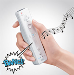

|
|
||
|
 |

Bluetooth（短距離無線通信）による無線接続 最大接続台数：４台 プレイ可能距離：テレビから５ｍ ■ポインター：画面を指し示すポインティング機能 ■モーションセンサー：傾きや動きの変化を検出（3軸） ■本体の電源スイッチ ■Ａ、Ｂ、十字ボタン ■−（マイナス）、Home（ホーム）、＋（プラス）ボタン ■１、２ボタン ■振動機能 ■スピーカ ■拡張ユニット接続可能 ■プレイヤーインジケータ |
|

Wiiリモコンの通信機能を利用 ■モーションセンサー：傾きや動きの変化を検出（3軸） ■Ｃ、Ｚボタン ■コントロールスティック |
Wiiリモコンの通信機能を利用 ■a、b、十字、Ｘ、Ｙ、Ｌ、Ｒ、ＺＲ、ＺＬボタン （Ｌ、Ｒボタンはアナログ） ■Ｌ、Ｒスティック ■−（マイナス）/Select、Home、＋（プラス）/Startボタン |
E3 2006 トップページ ＞ Wiiの概要 [ Wii本体 | コントローラ ]